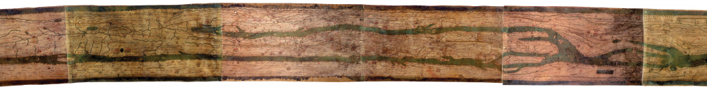
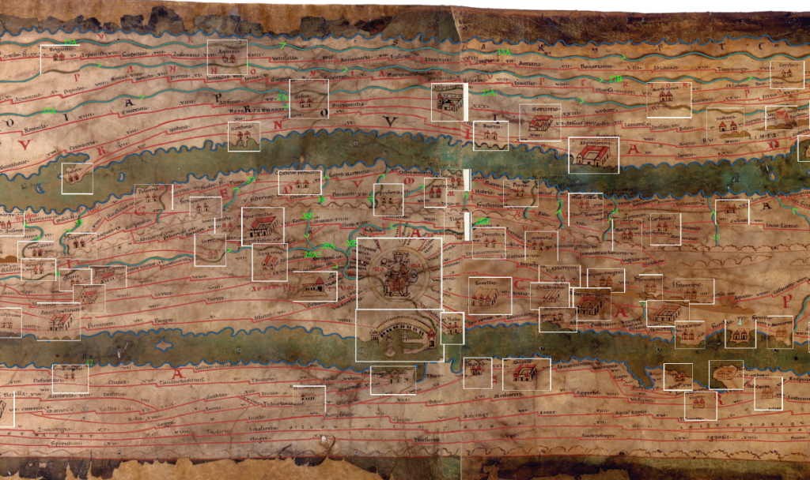
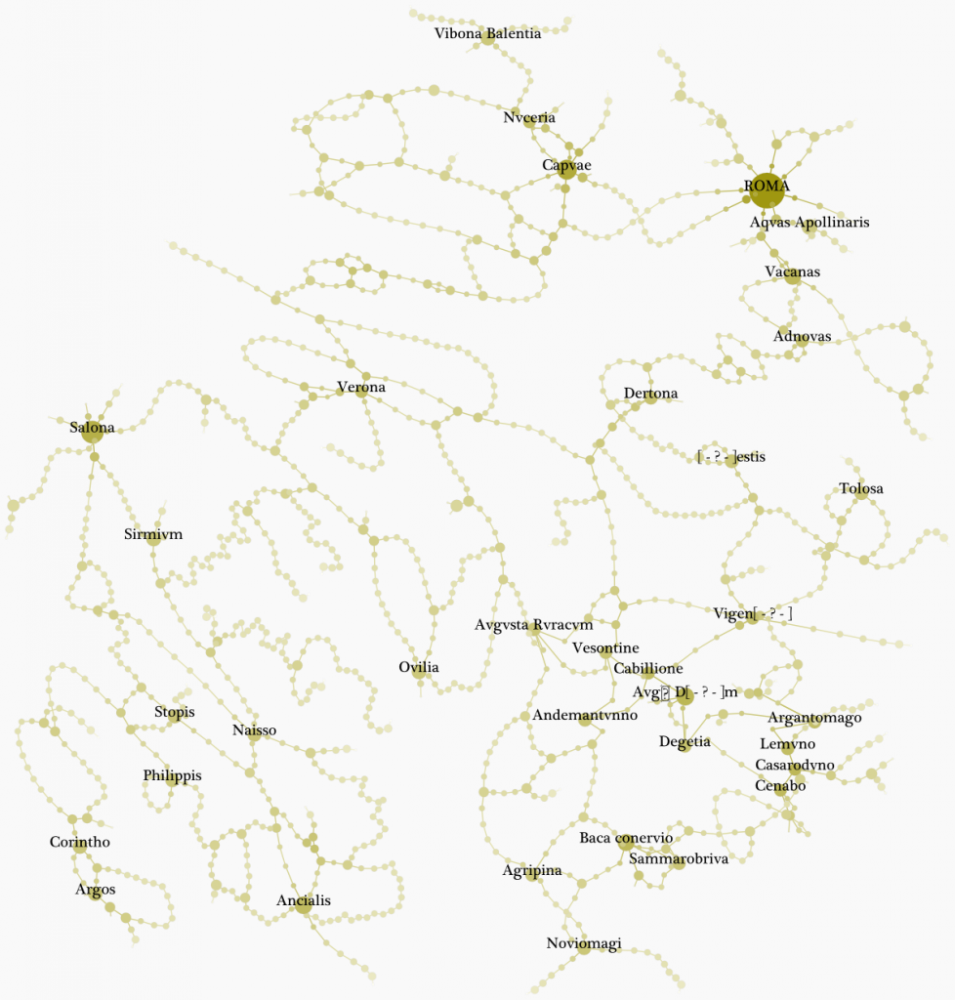
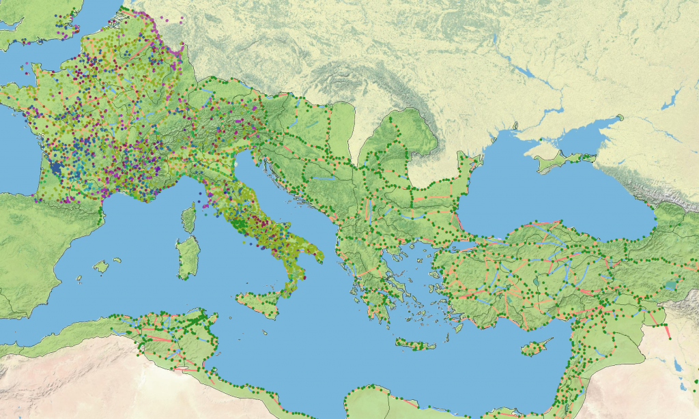
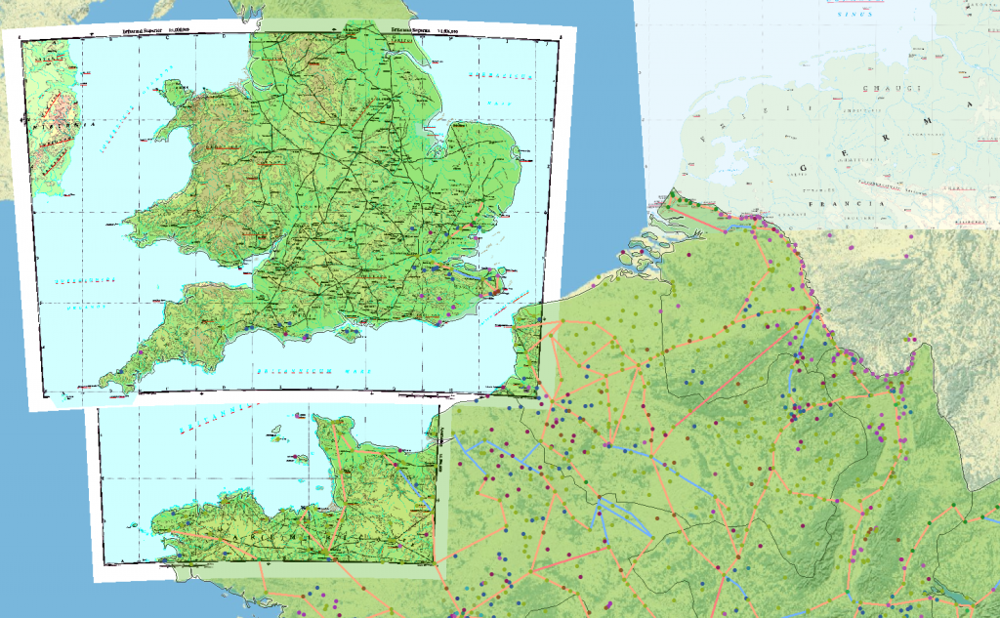

Four years ago, when I was a graduate student at UC Merced, I presented some of my research exploring the effect of environmental change on state formation in Sandai China using spatial analysis. The conference was a small affair focused on the ancient world and populated by scholars of Rome and Mesopotamia who wanted to know if anyone was doing work on Rome of the kind that was being done on China. I though there must have been a thousand Imperial Rome hGIS projects–it’s Rome, after all–but found little.
Now, nearly half a decade later, I find myself looking for historical GIS resources related to Rome, and the situation couldn’t be any more different. Along with the excellent (and active even way back in 2007) Pleiades project, there’s also the Digital Atlas of Rome and Medieval Civilization out of Harvard and supported by the same unit that supports the China Historical GIS. And then there’s the dataset developed for Richard Talbert’s Rome’s World, an exploration of the meaning and system of the Peutinger Table, a medieval reproduction of a visual representation of the transportation network of the late Roman Empire.


This is just part of the Peutinger Table, with Rome at the center and the Italian Peninsula stretched out with the Mediterranean Sea as a long but thin strech of water separating it from Africa.
If that sounds complicated, it’s nothing in comparison to the massive amount of supplementary GIS and network data hosted by Cambridge University Press and developed by the Institute for the Study of the Ancient World and the Ancient World Mapping Center. The material itself is released with no proper title, which makes for a cumbersome manner in which to write about it or reference it, but other than that and a few small issues, it is one of the finest and most complete and most accessible collections of historical GIS data that I’ve ever seen.


An example of the wealth of dynamic annotation layers available for browsing the map. By using tiled images, users are also provided with extremely high resolution browsing of the table.
To begin with, the entire map has been painstakingly annotated in its original form and made available using open, web-accessible mapping technology so that any user may look over the whole of the map and activate various layers of annotation. The amount of time and care it must have taken to produce these annotation layers was likely enormous, but such a full cataloging of the features of the object itself is not simply a curatorial exercise, it’s an examination of the information systems in use by Imperial Roman administrators from a millennium and half ago. Any act of translation, even one translating a classical conception of geography and space into a modern one, runs the risk of corrupting the original knowledge being displayed. By so thoroughly examining the original map and also providing such a complete and accessible accounting of that examination, the credibility of the more abstracted resources derived from the map are dramatically increased.
A quick note: I would not have known about these Roman GIS resources if Sean Gillies hadn’t clued me in to them, and according to the release notes on the site, the same could be said of many of the features I’m so impressed by, especially this interactive map.


The transportation network including Rome and Constantinople--the largest component of the network as provided by Rome's World--demonstrates the potential for further historical geographic network analysis afforded by the choice to release the collected data in a wide variety of forms.
While historical GIS has typically focused on the representation of data on maps or the use of traditional spatial analytical techniques, the Peutinger Table is less of a map than it is a creative visualization of a geographic network. Recognizing this, Rome’s World provides not only map-based resources but the features of the map organized as a network in their Database section. Even the symbol groups used to represent locations have been cataloged and could easily be translated to vector format and included in a future network representation of the data. As a small critique, I think the decision to release the network data in a purely exported form (suitable for browsing on-line and using as a reference index) adds an unnecessary layer to the processing requirements of future scholars who would like to use the data in a manner unexpected by the original creators of that content. To create the above network representation in Gephi, I had to build a parser to read the site’s content into a network format–it wasn’t difficult, but it was an added step that may dissuade scholars who are less comfortable with writing code and scripts.


Locations and routes from the Peutinger Table in typical GIS format.
For those traditionalists who want to see the routes on modern geography, an enormous wealth of ArcGIS-compatible vector data has also been released. Again, some transformation is necessary if one wants to examine such data in Network Analyst, but the willingness to share such extremely expensive work is amazing. By providing material in a web-accessible form as well as shapefiles (and here I call them “shapefiles” even though, naturally, any raw vector and raster formatted GIS data is meant by that term and not just data formatted for ESRI products) as well as practically raw database-formatted data, the creators increase the possibility of their material being used as a framework for further scholarship. Likewise, while I won’t be going into the level of analysis necessary to make specific claims to the quality and practices demonstrated by the datasets themselves, I or other hGIS scholars can do so because the material has been made available for peer review.


Several gigabytes of historical maps are also included on the site.
There’s actually even more than that available on the site. Along with all the data derived from the Peutinger Table are included gigabytes of historical maps of the Roman Empire that have been georectified and would serve as a sound basis for any scholar interested in integrating historical GIS into their scholarship about the Roman Empire.
I have not read Rome’s World, though of course I will, and so cannot comment upon the conclusions drawn from the material provided here. But as far as accessible and high quality GIS assets for historical scholarship, the material presented for Rome’s World is top-rate. I can only hope in the future all hGIS scholars will do such good work and prominently display it for review and use by their fellows.